Operating Systems
Hands-on experience with operating systems commonly encountered in IT support environments, including Windows and macOS / iOS.
Windows
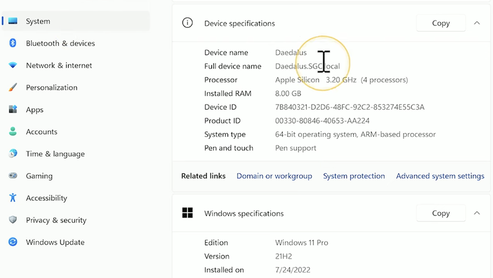
Windows Administration
Experience working with workgroups / domain environments.
Workgroups → Non-centralized setup; each computer maintains its own user information. Computers
can be part of a workgroup.
Domain → Centralized setup using Active Directory, designed for enterprise environments. User
accounts and devices are managed centrally. Allows software deployment, device and OS
management. Requires Windows Pro or higher.
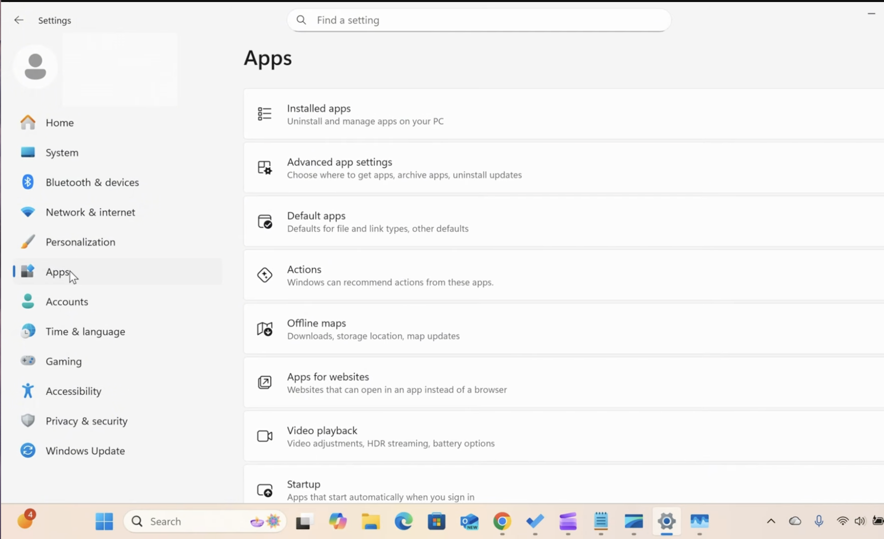
Settings & Control Panel
Settings and Control Panel are very similar, and most tasks can be done through Settings or by using the search bar. They are used to troubleshoot common issues such as network connectivity, display and sound problems, and printer issues. They also allow reconfiguration of Wi-Fi, Bluetooth, and VPN settings, installing or removing applications, and managing updates. Through User Accounts or System settings, you can manage user accounts, rename the computer, and make domain changes.
System Configuration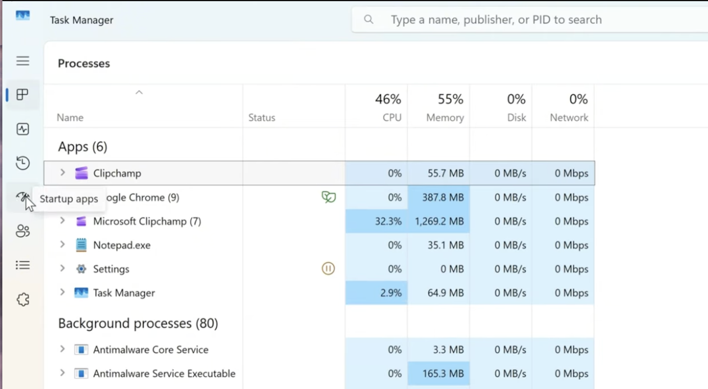
Task Manager
Utilized to monitor CPU, memory, disk, and network usage, end unresponsive applications, and manage startup programs.
Performance • Startup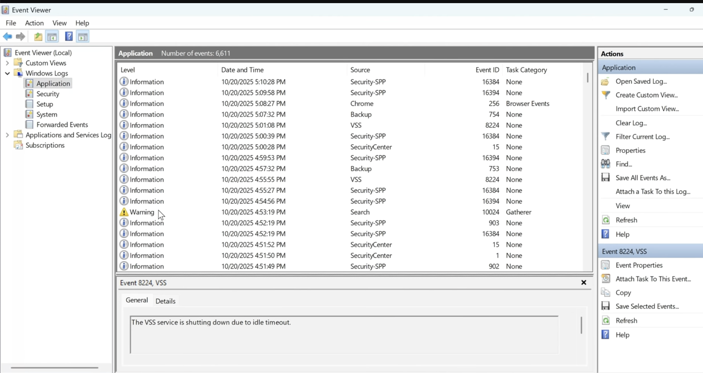
Event Viewer
Event Viewer displays Windows system logs. It helps identify the cause of issues by showing error codes, warnings, and timestamps that correspond to when problems occurred. It is useful for tracing recurring issues, especially those that are not immediately visible but happen in the background.
Logs • TroubleshootingmacOS & iOS
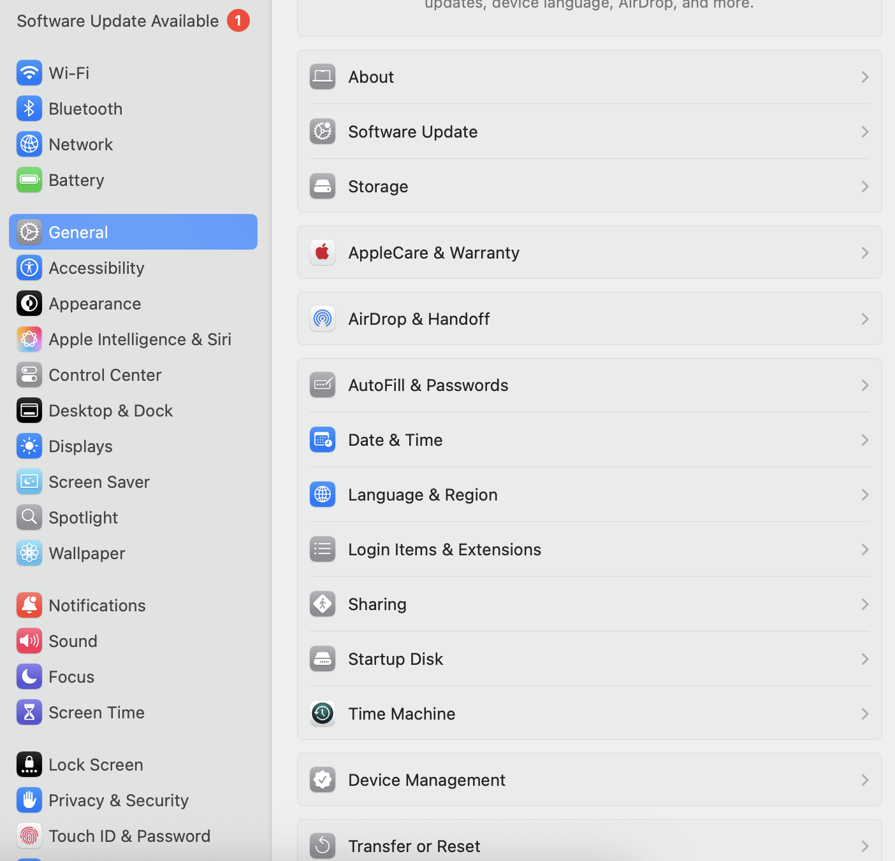
macOS System Settings
Used System Settings to troubleshoot Wi-Fi connectivity, manage privacy and security, configure iCloud, review storage usage, and install software updates.
• System Settings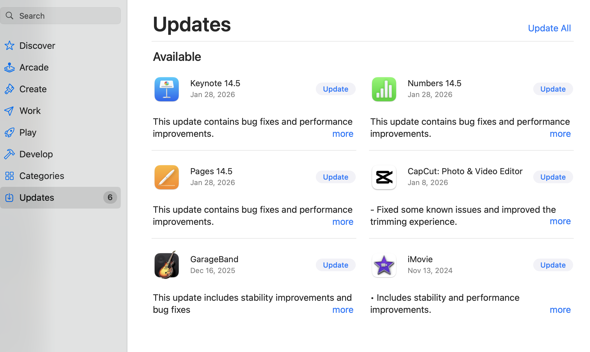
App Store Management
Installed and updated applications through the App Store to resolve issues such as crashing applications or apps failing to launch.
Apps • UpdatesTroubleshooting App Issues
Addressed common mobile app issues including apps not opening, slow response times, and unexpected crashes using standard troubleshooting steps.
- Restart the device
- Update or reinstall the app
- Check available storage
OS Fails to Update
Resolved operating system update failures by verifying storage availability, checking Wi-Fi connectivity, and rebooting devices.
- Remove unused apps and files
- Confirm stable Wi-Fi connection
- Reboot and retry update
Random Reboots
Investigated unexpected device restarts by reviewing OS and app versions, checking battery health, and escalating when further analysis was required.
- Update OS and applications
- Perform a hardware check including battery health
- Contact technical support for further options and review crash logs
Hardware Overview
Foundational knowledge of computer hardware components and basic hardware troubleshooting commonly encountered in IT support roles.
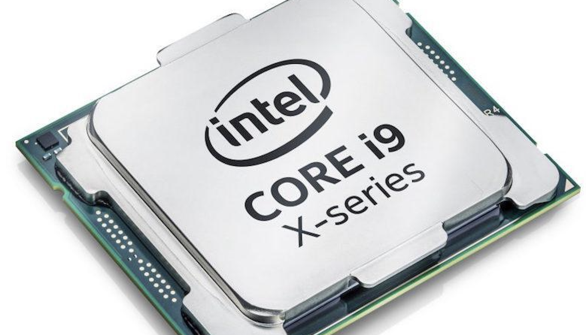
CPU (Central Processing Unit)
The CPU processes all instructions and data and is considered the brain of the computer. It is typically located under a cooling system such as a fan or heatsink.
Clock speed (GHz) determines how quickly instructions are processed. Higher speeds generally result in better performance. Common brands include Intel and AMD Ryzen.

Motherboard
The motherboard is the main circuit board that connects and allows communication between all components. It serves as the foundation of the computer system.
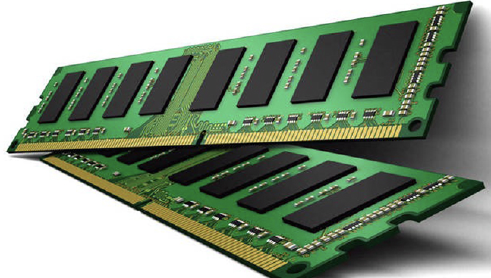
RAM (Random Access Memory)
RAM temporarily stores data and applications actively being used by the system. Data stored in RAM is lost when the computer is powered off.
Higher capacity allows more programs to run simultaneously, while higher speed enables faster data access. Common details include manufacturer, capacity, RAM type, and speed.
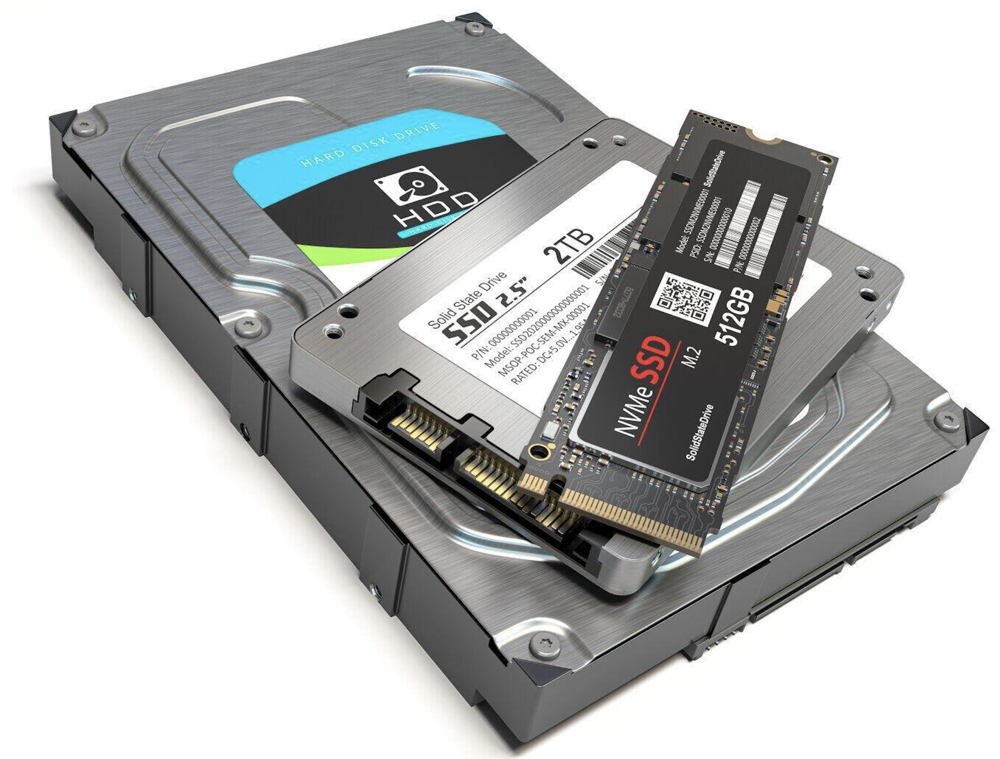
Storage Devices
- HDD: Uses spinning disks; slower but higher capacity at lower cost
- SSD: Faster and more reliable due to no moving parts
- NVMe: High-performance storage faster than traditional SSDs
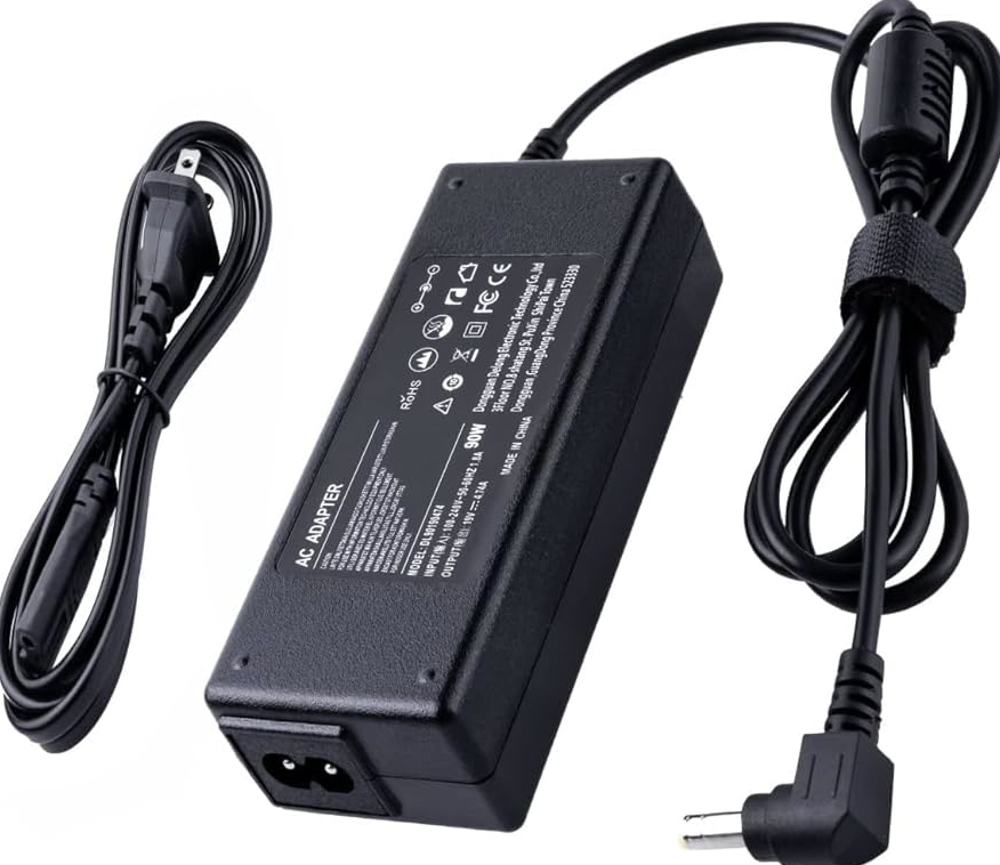
Power Supply Unit (PSU)
The PSU converts electricity from the wall outlet into the correct voltage required by each computer component.
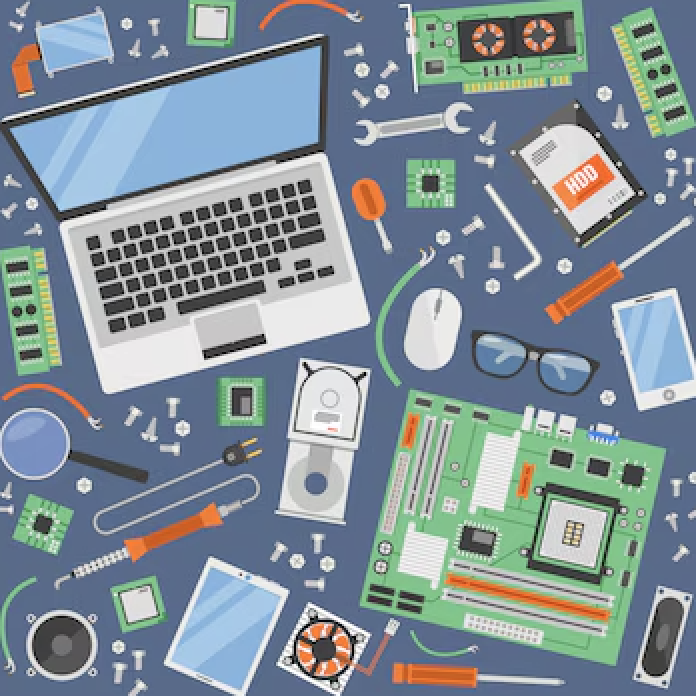
Replacing & Troubleshooting Hardware
Hardware replacement decisions are based on compatibility, capacity requirements, and performance needs to ensure system stability and reliability.
Replace Components
When to Replace RAM
Common Symptoms
- System slowdowns when multitasking
- Screen freezes or crashes with multiple applications open
- Very high memory usage
- Blue Screen of Death (BSOD)
- System fails to boot
Solutions
- Reseat RAM and test one stick at a time
- Run Windows Memory Diagnostic
- Replace or upgrade RAM if usage is consistently maxed out
When to Replace the Battery
Common Symptoms
- Battery health at a very low percentage
- Device shuts down unexpectedly
- Battery will not charge or drains quickly
- Device only functions while plugged in
Solutions
- Check battery health in system settings
- Replace the battery